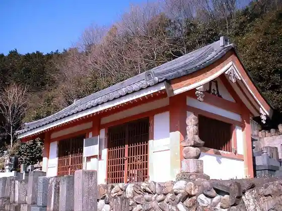
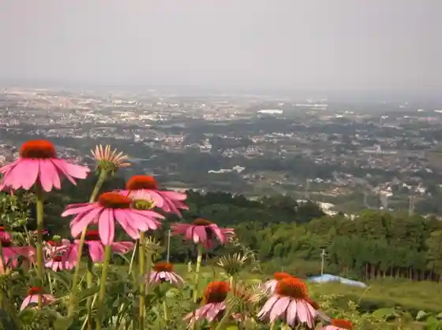
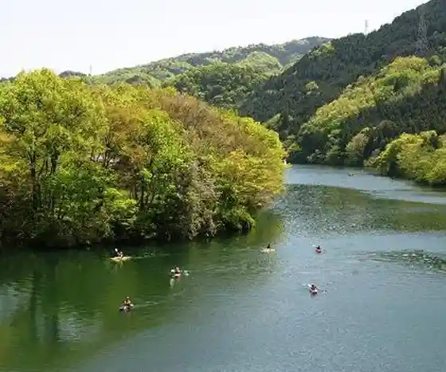
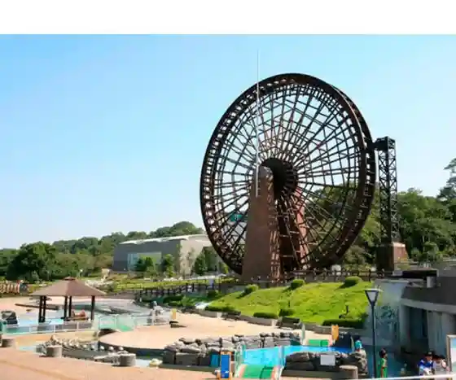

Yorii Hojo Festival
Yorii, Saitama · 048-586-0315 · Official / source link

Tama Yodo Mizumi
Yorii, Saitama · 048-581-2121 · Official / source link

Fufu Taki
Yorii, Saitama · 048-581-2121 · Official / source link

Kawasemi Kawara
Yorii, Saitama · 048-581-7333 · Official / source link

Yorii Hojo Festival
Yorii, Saitama · 048-581-2121 · Official / source link
En Ryoden Tokusan Center
Yorii, Saitama · 048-581-8511 · Official / source link
Hachigata Shiro Rekishikan
Yorii, Saitama · 048-586-0315 · Official / source link
Fufu Taki
Yorii, Saitama · 048-581-3012 · Official / source link
Kanao Tsutsuji Yama Park
Yorii, Saitama · 048-581-2121 · Official / source link
Hachigata Shiro Park
Yorii, Saitama · 048-586-0315 · Official / source link
Hachigata Castle Ruins
Yorii, Saitama · 048-581-2121 · Official / source link
Saitama Prefectural Kawa no Museum
Yorii, Saitama · 080-2634-1112 · Official / source link
Hachigata Shiro Rekishikan
Yorii, Saitama · 048-581-2121 · Official / source link